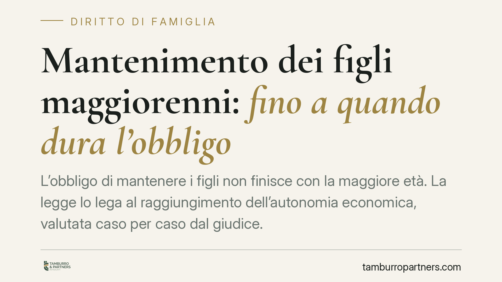

Mantenimento dei figli maggiorenni: fino a quando dura l'obbligo
L'obbligo di mantenere i figli non finisce con la maggiore età. La legge lo lega al raggiungimento dell'autonomia economica, valutata caso per caso dal giudice. La Cassazione ha però posto limiti chiari: il figlio deve attivarsi per rendersi indipendente, senza confidare in un sostegno a tempo indeterminato. Vediamo quando l'obbligo si estingue e cosa considerano i tribunali.

Il quadro dei fatti
Una domanda ricorre nelle separazioni e nei divorzi: fino a quando un genitore deve provvedere al mantenimento del figlio? La risposta non sta in un'età anagrafica, ma in un concetto elastico: l'autonomia economica. Diversi tribunali di merito (tra cui Lamezia Terme, Latina, Catanzaro, Foggia e Cagliari) e la Corte di Cassazione hanno progressivamente definito i confini di questo obbligo, spostando l'attenzione sull'impegno del figlio nel costruirsi un percorso lavorativo.
Inquadramento normativo
Il dovere dei genitori di mantenere, istruire ed educare i figli ha fondamento costituzionale nell'art. 30 della Costituzione e trova disciplina negli artt. 147 e 315-bis del Codice civile. Questi obblighi non si estinguono automaticamente al compimento del diciottesimo anno: la maggiore età non coincide con l'indipendenza economica.
La norma di riferimento per il figlio maggiorenne è l'art. 337-septies c.c., che consente al giudice di disporre un assegno periodico in favore del figlio maggiorenne "non economicamente autosufficiente". L'art. 316-bis c.c. regola inoltre le modalità con cui i genitori concorrono al mantenimento in proporzione alle rispettive sostanze.
La Cassazione ha chiarito che l'obbligo non è perpetuo. Cessa quando il figlio raggiunge un reddito stabile e adeguato alla propria formazione, oppure quando, pur potendo lavorare, resta inerte. In altri termini, l'obbligo si giustifica finché il ritardo nell'ingresso nel mondo del lavoro non dipende da negligenza o inerzia del figlio.
Cosa cambia in concreto
Per i genitori questo significa che il mantenimento non è un impegno senza scadenza. Il figlio maggiorenne che ha completato gli studi e ha avuto un tempo ragionevole per cercare un'occupazione compatibile con la sua preparazione non può pretendere un sostegno indefinito.
Per i figli, il diritto al mantenimento è condizionato a un comportamento attivo: proseguire seriamente il percorso di studi, formarsi, cercare lavoro. Il rifiuto di occasioni professionali adeguate, o l'assenza di un impegno concreto, può far venire meno il diritto all'assegno.
È importante un aspetto processuale: secondo l'orientamento consolidato della Cassazione, spetta al figlio (o al genitore che chiede l'assegno per suo conto) dimostrare la mancanza di autosufficienza. Non è il genitore obbligato a dover provare che il figlio potrebbe mantenersi da solo. Questa distribuzione dell'onere della prova incide molto sull'esito dei giudizi.
Il giudice valuta caso per caso: età del figlio, titolo di studio conseguito, condizioni del mercato del lavoro nel settore di riferimento, tempo trascorso dalla conclusione del percorso formativo e concreta attivazione nella ricerca di un'occupazione.
Cosa fare in concreto
- Documentate il percorso del figlio: iscrizioni, esami sostenuti, titoli conseguiti, curriculum e candidature inviate. Sono elementi decisivi per chi chiede o contesta l'assegno.
- Verificate la ragionevolezza del tempo trascorso: valutate quanto è passato dalla fine degli studi e se vi è stata una ricerca effettiva di lavoro.
- Non sospendete unilateralmente i pagamenti: se ritenete cessato l'obbligo, chiedete al giudice la modifica o la revoca dell'assegno. Interrompere di propria iniziativa espone a conseguenze.
- Raccogliete i dati reddituali: eventuali redditi del figlio, anche da lavoro occasionale o saltuario, vanno documentati perché rilevano nella valutazione.
- Consigliamo di richiedere una valutazione personalizzata prima di avviare o resistere a una richiesta: gli orientamenti dei tribunali variano e ogni situazione ha specificità proprie.
Un obbligo che non è a tempo indeterminato
La linea seguita dalla giurisprudenza degli ultimi anni riequilibra il rapporto tra tutela del figlio e ragionevolezza dell'impegno del genitore. Il mantenimento resta un dovere serio, ma non giustifica una dipendenza economica prolungata oltre i tempi fisiologici per l'inserimento professionale.
Contributo informativo a cura di Tamburro & Partners - Avv. Giuseppe Tamburro. Non costituisce parere legale.
Ogni famiglia ha il suo equilibrio.
Separazione, divorzio, affidamento, assegno: se vuoi un confronto riservato su una specifica situazione, scrivi allo studio. Ti rispondiamo entro un giorno lavorativo.